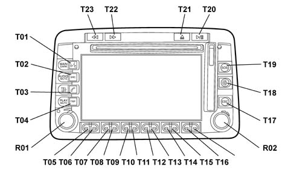
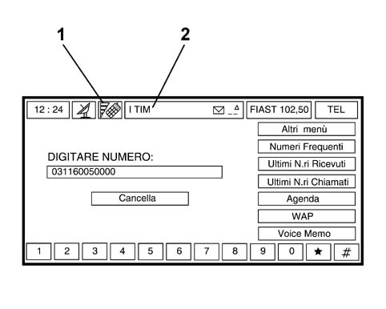

5580PK GSM AERIAL OPERATION CHECK
- Path
- Test > 55 ELECTRICAL EQUIPMENT > 5580 SPECIAL ACCESSORIES > 5580P CONNECT PANEL > 5580PK GSM AERIAL OPERATION CHECK
- Kind
- test / check procedure
- Applies to
- all engines; all production periods
- Interactive page
- https://sloeber94.github.io/elrnDB-fPnd/en/#/169001379
Applies to: all engines; all production periods
- Place the vehicle somewhere where the GSN field level is sufficient.
- In this case, from the moment the Connect displays the field the GSM aerial connection is also checked.
- Extract the SIM holder housing located on the top right of the Connect screen by pressing the button above it.

- Insert the SIM card with the gold part facing the left side of the vehicle.
- Turn the ignition key to the ON position.
- Press the left knob (R01) to switch the CONNECT on.
- Press the "TEL" button (T03) to activate the telephone application, check that the following screen is shown on the display, that the telephone is enabled and that the display automatically shows the field level and the service provider connected to (which depends on the test SIM card) by the specific symbol.

1. Field level reading
2. Telephone service provider
- A positive result for the operation described above confirms that the GSM aerial has been correctly installed.